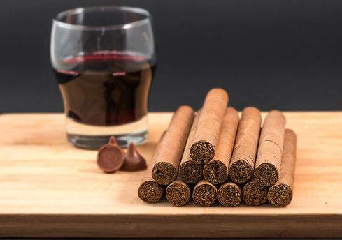

Los mejores puros habanos del mercado!
Se le conoce habitualmente como habano. La reputación cubana se presenta tanto por las características únicas de la región de Vuelta Abajo en la provincia de Pinar del Río, al oeste de la isla, en donde un microclima permite el cultivo de tabaco de alta calidad como por la habilidad de los fabricantes cubanos del puro. Es una Denominación de Origen y sólo reservada a los puros fabricados en Cuba conforme a las normas de cultivo y producción establecidas por el consejo regulador.